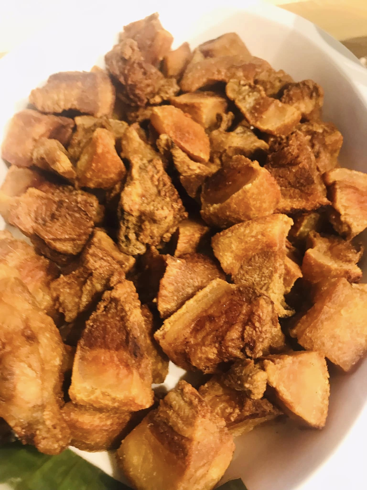
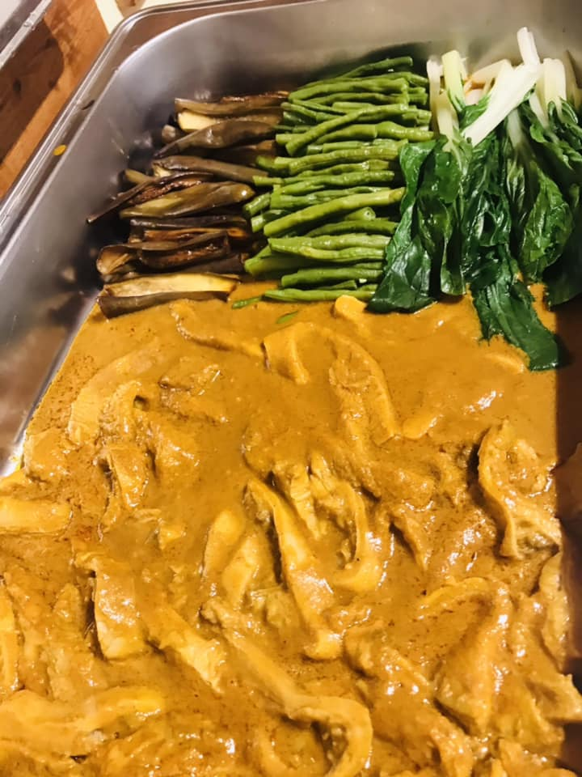

Welcome to NM BARRIOS Restaurant
EAT ALL YOU CAN!
Our Specialties
Discover our delicious dishes made with fresh ingredients.

Sisig
Our famous sizzling pork sisig, a Pampanga classic.

Lechon Kawali
Crispy pork belly served with our special sauce.

Kare-Kare
Traditional Filipino peanut stew with vegetables and meat.
Location
Visit us at Purok 1 Camachiles, Brgy. Camachiles, Mabalacat City, Pampanga for a great dining experience.